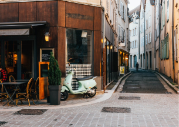

Nos Address

Yummy Noodle
185 rue de Lancry
75010 Paris
Yu Noodle My
350 rue Saint-Guillaume
75007 Paris

Les Yummy Nouilles
208 rue au Maire
75003 Paris
Commandez maintenant
click & collectNotre savoir faire
Depuis près de 10 ans maintenant, nous partageons avec vous les meilleures recettes. Nos plats ont tous été conçus, et affinés au fil des années et des goûts. Nous vous apportons le meilleur de l’Asie de l’Est en plein coeur de Paris. Chaque année, nous reprenons tous nos plats pour les améliorer, les modifier et qu’ils vous plaisent toujours plus. Nous espérons que vous vous régalerez en dégustant nos plats.
retrouvez-nous sur les réseaux sociaux